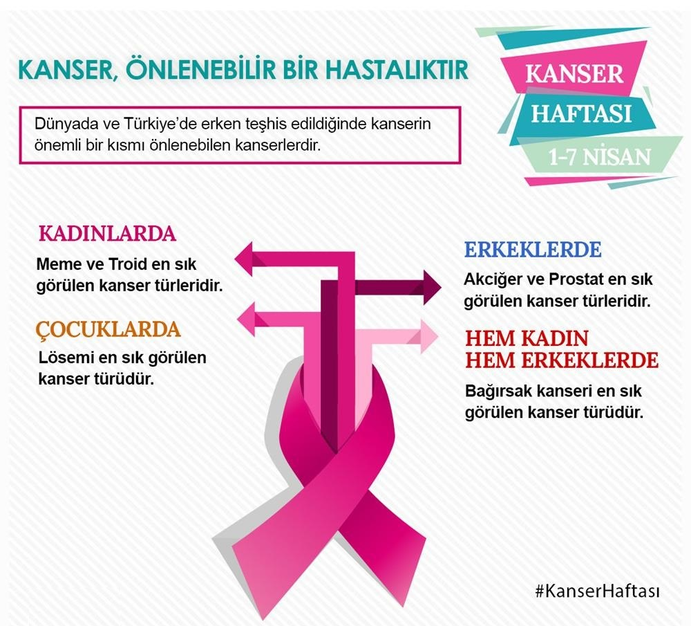

Kanser Haftası
Toplumda kanser ve kanserden korunma konusunda farkındalığı artırmak için ülkemizde, her yıl 1-7 Nisan tarihleri arasında “Ulusal Kanser Haftası” etkinlikleri düzenlenmektedir.
Kanser ortak özellikleri nedeni ile çok sayıda hastalığa verilen isimdir. “Vücudumuzdaki hücrelerin kontrolsüz çoğalması” tüm kanserlerin ortak özelliğidir.
Kanserin belirtileri genel olarak şu şekilde özetlenebilir:
- Memede ağrısız, zamanla büyüyen bir kitlenin ele gelmesi, hissedilmesi
- Uzun süreli ses kısıklığı veya öksürük
- Yeni bir cilt beni ya da mevcut bir bende değişiklikler olması
- İyileşmeyen bir yara
- Koltuk altı, boyun, kasık gibi cilt altında ele gelen kitle
- Bağırsak alışkanlıklarındaki değişiklikler (uzun süreli, iyileşmeyen ishal, kabız olma)
- Zor veya ağrılı idrara çıkma
- Yemekten sonra hazımsızlık
- İştahsızlık, zayıf veya çok yorgun hissetmek
- Yutmada zorluk
- Bilinen hiçbir neden olmadan kilo kaybı veya alımı
- Karın ağrısı
- Açıklanamayan gece terlemeleri
- Kanlı idrar, dışkıda kan görülmesi, düzensiz regli kanamaları, burun ve diş eti kanamaları
- Cilt altında kanama (küçük kırmızı döküntüler, ciltte morarmalar)
Bu belirtiler kanser dışında başka hastalıkların belirtisi de olabilir.
Birkaç haftadan uzun süren belirtiniz varsa mutlaka doktora danışmalısınız. Erken tanı pek çok hastalık gibi kanser için de oldukça önemlidir.
Kanser, dünyada ve ülkemizde sebebi bilinen ölümler arasında kardiyovasküler hastalıklardan sonra ikinci ölüm sebebi olması açısından önemli bir toplum sağlığı sorunudur. Kansere neden olan faktörlerin başında %90 oranında çevresel faktörler, %10 oranında ise genetik faktörler gelmektedir. Türkiye de en sık görülen kanser türleri değerlendirildiğinde; erkeklerde ilk sıralarda akciğer, prostat, kalın bağırsak, mesane ve mide kanserlerinin, kadınlarda ise; meme, tiroid, kalın bağırsak, rahim ve akciğer kanserlerinin ilk sıralarda yer aldığı görülmektedir.
Dünyada ve Türkiye’de sık görülen kanserlerden üçü olan; meme, serviks (rahim ağzı) ve kolorektal (kalın bağırsak) kanserlerine erken teşhis amacıyla toplum taraması programına alınmış olup, erken tanı alan kişilerin yaşam süresi ve kalitesini artmaktadır.
Toplum tabanlı kanser tarama programları; Kanser Erken Teşhis Tarama ve Eğitim Merkezleri (KETEM), Toplum Sağlığı Merkezleri (TSM), Sağlıklı Hayat Merkezleri (SHM) ve Aile Sağlığı Merkezlerinde (ASM) yürütülmektedir.
Meme, kalın bağırsak ve rahim ağzı kanserlerine karşı tarama hizmetleri ücretsiz olarak verilmektedir. Meme kanseri taraması; 40-69 yaş arasındaki kadınlara yılda bir klinik meme muayenesi, 2 yılda bir mamografi çekilmesi yöntemiyle yapılmaktadır.
Rahim ağzı kanseri taraması; Ülke genelinde 30-65 yaş arası tüm kadınlarımıza 5 yılda bir HPV-DNA ile tarama ücretsiz olarak yapılmaktadır. Tüm örnekler Ankara ve İstanbul’daki kurulan Ulusal HPV Laboratuvarında değerlendirilmektedir.
Serviks kanseri DSÖ tarafından “önlenebilen bir ölüm nedeni” olarak tanımlanmaktadır. Halen en çok öldüren jinekolojik kanserler arasında olan bu hastalık için ülke genelinde smear testine ilaveten HPV-DNA ile tarama yapılmaktadır. HPV DNA taramaları her ilimizde KETEM, Toplum Sağlığı Merkezleri, Sağlıklı Hayat Merkezleri ve Aile Sağlığı Merkezlerinde yapılmaktadır.
Kalın bağırsak kanseri taraması; 50-70 yaş arasındaki kadın ve erkeklere 2 yılda bir gaitada (büyük tuvalet numunesinde) gizli kan testi (GGT) ve 10 yılda bir kolonoskopi yapılarak taranmaktadır. Bu amaçla toplum tabanlı taramalar ile hedef nüfusun en az %70’ine ulaşarak, kolorektal patolojileri henüz premalign veya erken evrede iken tespit etmek, etkin ve basit yöntemlerle tedavi etmek suretiyle de invazif kanser sıklığını, buna bağlı morbidite ve mortaliteyi düşürerek olası karmaşık ve pahalı tedavileri önlemek amaçlanmaktadır.
Meme kanseri için toplum tabanlı tarama yaparak hedef nüfusun en az %70’ine ulaşmak, kanser gelişim sürecini, henüz klinik bulgular ortaya çıkmadan, erken evrede iken tespit etmek ve kadınlarda meme kanserine bağlı mortalite hızının düşürülmesi hedeflenmektedir. Bu amaçla 40-69 yaş arasındaki kadınlara yılda bir klinik meme muayenesi, 2 yılda bir mamografi çekilmesi önerilmektedir.
Unutulmamalıdır ki konu kanser ise erken tanı HAYAT KURTARIR.
